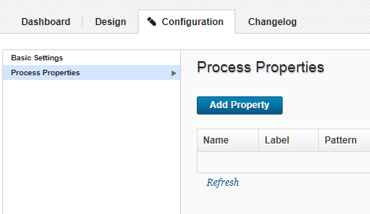

Adding process properties
A process property provides a way to add user-supplied information to a process. A running process can prompt users for information and then incorporate it into the process. For example, if the process entails authenticating with another server, you can require that a user enter an ID and a password for the process to continue. Properties are defined in the Edit Property dialog box.
- Open the process.
-
On the Configuration tab, click Component Process Properties, Application Process Properties, or Process Properties, depending on the type of process. The Configuration tab looks like the following figure:

-
In the Edit Properties dialog box, enter a name in the Name field.
- Optionally, enter a description in the Description field.
- Enter a label in the Label field. The label is associated with the property in the user interface.
- In Pattern, enter a regular expression to require that user input values for this property match a specific pattern. Leave this field blank to accept any values.
- If the property is required, check the Required check box.The default value is that the property is not required.
- Specify the type of expected value with the Type list. Supported types are:
text,text area,check box,select,multi select, andsecure. Default type istext. - In the Default Value field, enter a default value (if any).
- To save your work, click Save. To discard changes, click Cancel.
To use a property in a process, reference it when you configure (see Component processes) a step that uses it.
Parent topic: Processes